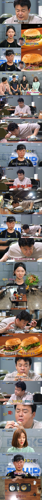

"햄버거에 된장 발랐다고 어르신들이 좋아할거 같아? 그냥 머리로만 해석한거지"
칼국수에 마라를 넣으면 젊은 사람들이 좋아하지 않을까?

"햄버거에 된장 발랐다고 어르신들이 좋아할거 같아? 그냥 머리로만 해석한거지"
칼국수에 마라를 넣으면 젊은 사람들이 좋아하지 않을까?
근데 마라 칼국수를 먹을거면 그냥 마라탕집을 가지 않을까?
저 백종원 오른팔아저씨는 또 맛있다고 했겠지??ㅋㅋㅋㅋ
기본메뉴 잘하면서 여기서만 먹을수있는 시그니쳐메뉴로 설계한거면 맞말
애이 이건 존나 억까지
마라 칼국수는 맛있을거 같은데 왜
맛은 어느정도 예상이가는데, 해산물 베이스인 칼국수라 어울리기 쉽지 않을 것 같기도하고..
사골베이스였음 맛났을듯,
차라리 마라말고 두반장 베이스로한 우육면 느낌을 줬다면 어르신 입맛에도 어느정도 맞지않았을까
자주가는 중국집 마라짬뽕은 괜찮은데 ㅋㅋ 망해버려서...
김찌랑 된찌 햄버거는 보기만해도 너무별로다
차라리 롯데리아햄버거를 먹으러갈듯
김치버거 된장버거는 상상만 해도 역한데..? 마라 칼국수는 상상만 해도 맛있을듯.. 참고로 나는 백종원 골목식당보다도 더 전부터 싫어했던 골수 안티임.. 억까는 하지말자는거임..
노브랜드볶음밥버거먹어봐 괜찮아
실드칠 생각은 없는데 자기 비용을 들이는 시도는 항상 존중받을 수 있다고 생각함. 그 결과물이 좋지 않으면 겸허하게 받아들이고 또 다른 시도로 나아가야하는데 저 지적받는 사장님은 현실을 받아들이지 못하고 왜 안먹히는지조차 짐작을 못하는 상황이잖아. 미라 칼국수의 시도로 왜 내로남불이냐고 까기에는 결이 좀 다르지..
빽보이 아니고 싸울 생각도 없음